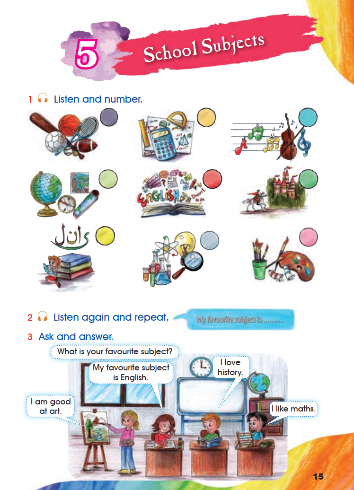
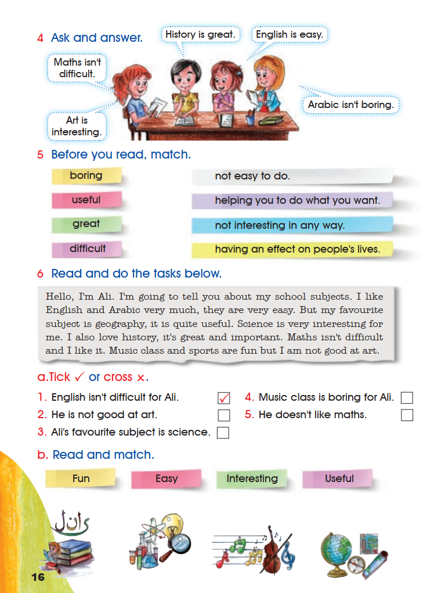
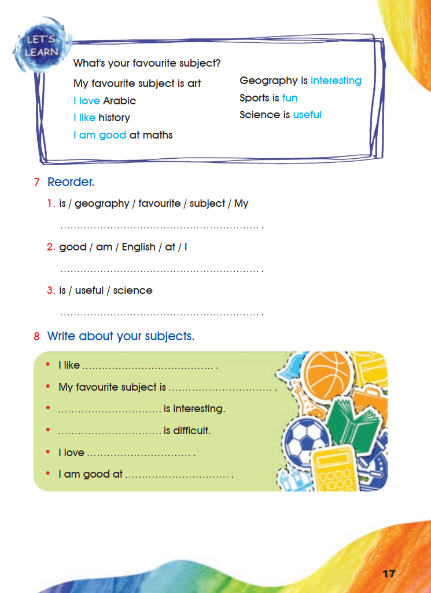
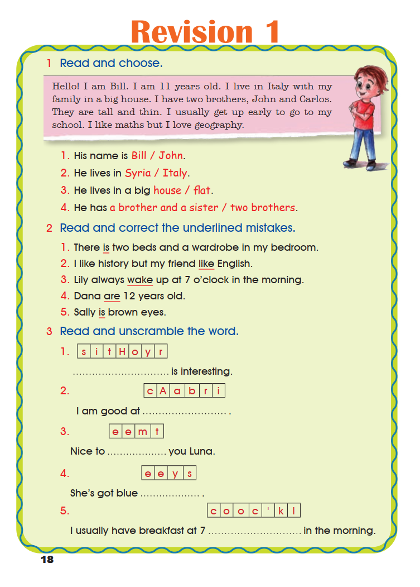
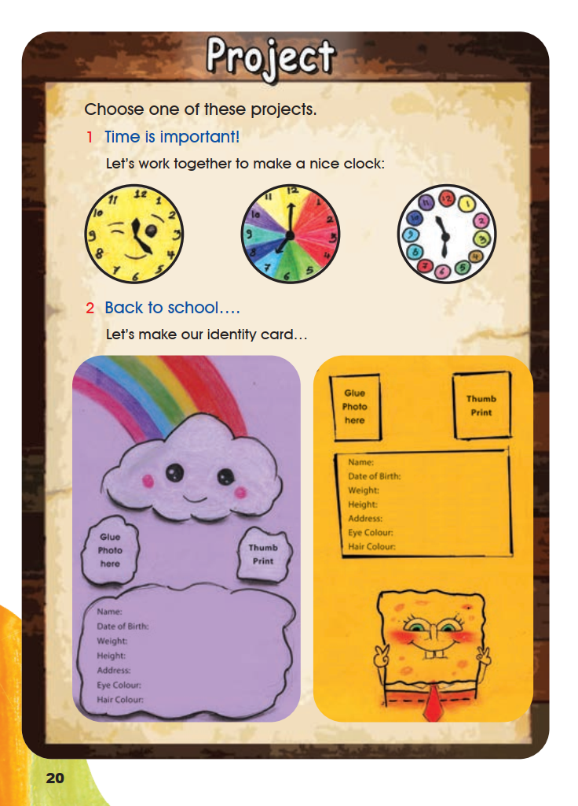

Pupil’s Book
School Subjects · pages 15–20. The complete original source scans below preserve printed content and layout.
Pupil’s Book · page 15
Original source scan 1, preserved byte-for-byte. This page includes all visible exercises, directions, examples and illustrations exactly as supplied.

Accessible text transcription · page 15
5 · School Subjects
1. Listen and number.
2. Listen again and repeat.
My favourite subject is ………
3. Ask and answer.
What is your favourite subject?
My favourite subject is English.
I love history.
I am good at art.
I like maths.Open the source page · Pupil’s Book · p. 15
The original supplied scan, unchanged. Open it at full size to check the print, the illustrations and the answer spaces.
Exercise 1 · Listen and number.
Nine printed bubbles, in the printed order left to right and then top to bottom. Write the number you hear for each one.
Pupil’s Book · page 16
Original source scan 2, preserved byte-for-byte. This page includes all visible exercises, directions, examples and illustrations exactly as supplied.

Accessible text transcription · page 16
4. Ask and answer.
Maths isn’t difficult.
History is great.
English is easy.
Art is interesting.
Arabic isn’t boring.
5. Before you read, match.
boring · useful · great · difficult
not easy to do. · helping you to do what you want. · not interesting in any way. · having an effect on people’s lives.
6. Read and do the tasks below.
Hello, I’m Ali. I’m going to tell you about my school subjects. I like English and Arabic very much, they are very easy. But my favourite subject is geography, it is quite useful. Science is very interesting for me. I also love history, it’s great and important. Maths isn’t difficult and I like it. Music class and sports are fun but I am not good at art.
a. Tick ✓ or cross ✗.
1. English isn’t difficult for Ali. 2. He is not good at art. 3. Ali’s favourite subject is science. 4. Music class is boring for Ali. 5. He doesn’t like maths.
b. Read and match.
Fun · Easy · Interesting · Useful.Open the source page · Pupil’s Book · p. 16
The original supplied scan, unchanged. Open it at full size to check the print, the illustrations and the answer spaces.
Pupil’s Book · page 17
Original source scan 3, preserved byte-for-byte. This page includes all visible exercises, directions, examples and illustrations exactly as supplied.

Accessible text transcription · page 17
Let’s Learn
What’s your favourite subject?
My favourite subject is art.
I love Arabic.
I like history.
I am good at maths.
Geography is interesting.
Sports is fun.
Science is useful.
7. Reorder.
1. is / geography / favourite / subject / My
2. good / am / English / at / I
3. is / useful / science
8. Write about your subjects.
I like ………
My favourite subject is ………
……… is interesting.
……… is difficult.
I love ………
I am good at ………Open the source page · Pupil’s Book · p. 17
The original supplied scan, unchanged. Open it at full size to check the print, the illustrations and the answer spaces.
Exercise 7 · Reorder.
Use each printed word once and add the capital letter and full stop.
Exercise 8 · Write about your subjects.
Six printed sentence frames with a dotted line each.
Pupil’s Book · page 18
Original source scan 4, preserved byte-for-byte. This page includes all visible exercises, directions, examples and illustrations exactly as supplied.

Accessible text transcription · page 18
Revision 1
1. Read and choose.
Hello! I am Bill. I am 11 years old. I live in Italy with my family in a big house. I have two brothers, John and Carlos. They are tall and thin. I usually get up early to go to my school. I like maths but I love geography.
1. His name is Bill / John.
2. He lives in Syria / Italy.
3. He lives in a big house / flat.
4. He has a brother and a sister / two brothers.
2. Read and correct the underlined mistakes.
1. There is two beds and a wardrobe in my bedroom.
2. I like history but my friend like English.
3. Lily always wake up at 7 o’clock in the morning.
4. Dana are 12 years old.
5. Sally is brown eyes.
3. Read and unscramble the word.
1. s i t H o y r ……… is interesting.
2. c A a b r i I am good at ……… .
3. e e m t Nice to ……… you Luna.
4. e e y s She’s got blue ……… .
5. c o o c ’ k l I usually have breakfast at 7 ……… in the morning.Open the source page · Pupil’s Book · p. 18
The original supplied scan, unchanged. Open it at full size to check the print, the illustrations and the answer spaces.
Exercise 2 · Read and correct the underlined mistakes.
Exactly one word is underlined in each printed sentence. Write the word that corrects it.
Exercise 3 · Read and unscramble the word.
Use every printed letter once.
Pupil’s Book · page 19
Original source scan 5, preserved byte-for-byte. This page includes all visible exercises, directions, examples and illustrations exactly as supplied.

Accessible text transcription · page 19
4. Read and choose.
a. I am ten years old.
b. There are two floors in my house.
c. I have breakfast early in the morning.
d. I’ve got two brothers.
e. I am good at maths.
5. Read and match.
1. What does he look like?
2. Are there sofas in your bedroom?
3. What’s your name?
4. What’s your favourite subject?
5. What time is it?
a. I am Lily.
b. I like history.
c. He’s got brown hair with blue eyes.
d. It’s half past six.
e. No, there aren’t. There are two beds.Open the source page · Pupil’s Book · p. 19
The original supplied scan, unchanged. Open it at full size to check the print, the illustrations and the answer spaces.
Pupil’s Book · page 20
Original source scan 6, preserved byte-for-byte. This page includes all visible exercises, directions, examples and illustrations exactly as supplied.

Accessible text transcription · page 20
Project
Choose one of these projects.
1. Time is important! Let’s work together to make a nice clock.
2. Back to school… Let’s make our identity card…
Glue Photo here · Thumb Print
Name · Date of Birth · Weight · Height · Address · Eye Colour · Hair ColourOpen the source page · Pupil’s Book · p. 20
The original supplied scan, unchanged. Open it at full size to check the print, the illustrations and the answer spaces.
Project 2 · identity card.
The book prints a card frame with these labels. The clock design in Project 1 is made, not written, so it is not counted as Writing.
Personal practice drafts are saved in this browser; source scans remain unchanged.